Rainfall taking place across country
By Rastriya Samachar Samiti
Published: 12:59 pm Aug 25, 2023
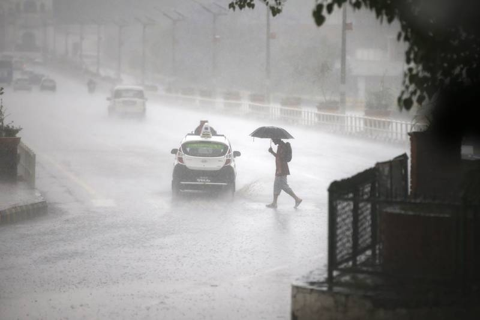
A man holds an umbrella to shield the heavy rainfall as he crosses the road in Kathmandu, on Thursday, May 11, 2017. Photo: Skanda Gautam/ THTFILE PHOTO: A man holds an umbrella to shield the heavy rainfall as he crosses the road in Kathmandu, on Thursday, May 11, 2017. Photo: Skanda Gautam/ THT
KATHMANDU, AUGUST 25The monsoon low pressure axis is situated north of its normal position at present. Moreover, the low pressure area over the north-east parts of India's Uttar Pradesh has its influence at present in Nepal. As a result of these two weather systems, rainfall is taking place in most places of the country, the Department of Hydrology and Meteorology, Meteorological Forecasting Division said. The weather is generally to completely cloudy throughout the country with light to moderate rainfall taking place at a few places of Koshi, Madhes, Bagmati, Gandaki, Lumbini and Karnali provinces.It will be generally to fully cloudy throughout the country towards the afternoon with chances of light to moderate rainfall at some places of Koshi, Madhes, Bagmati, Gandaki and Lumbini provinces and at a few places of the rest of the provinces.
There is also the possibility of heavy rainfall along with thunder and lightning at few places of Koshi, Bagmati and Gandaki provinces and at one or two places of Madhes and Lumbini provinces, according to the Division.Weather on SaturdayThe weather will be partly to generally cloudy throughout the country on Saturday with chances of light to moderate rainfall at some places of Koshi, Bagmati and Gandaki provinces and at a few places of the rest of the provinces.There is the possibility of heavy rainfall accompanied by thunder and lightning at one or two places of Koshi and Madhes provinces, the Division said.
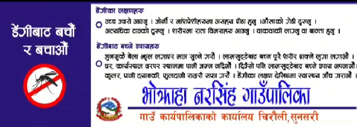
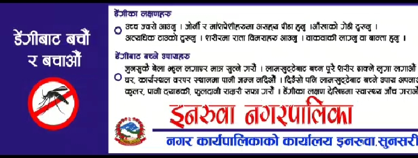
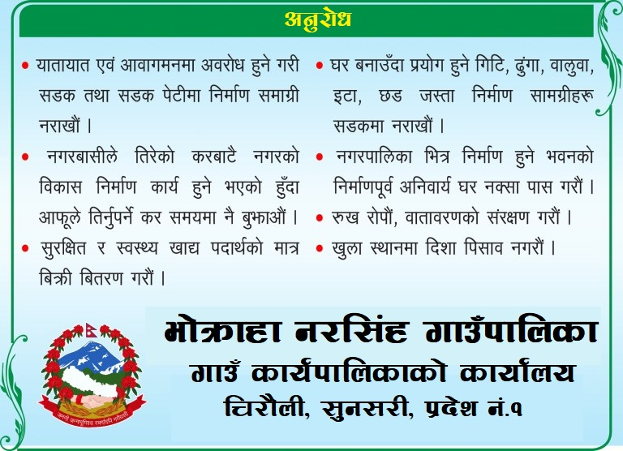
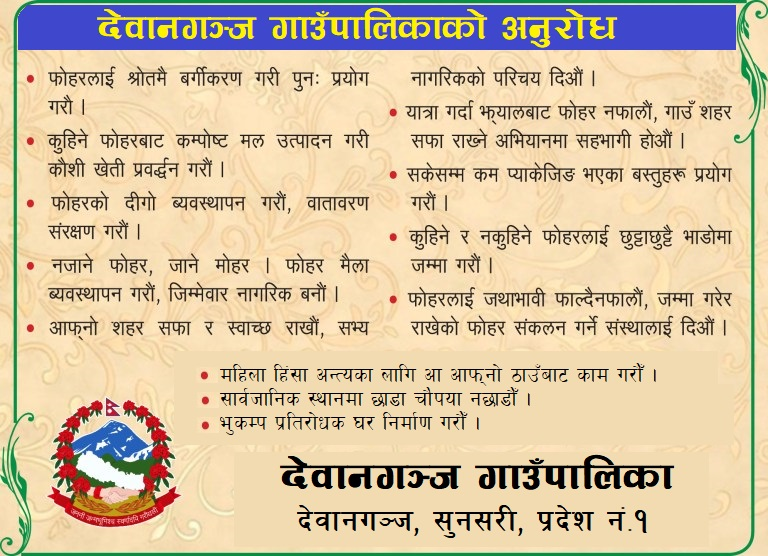
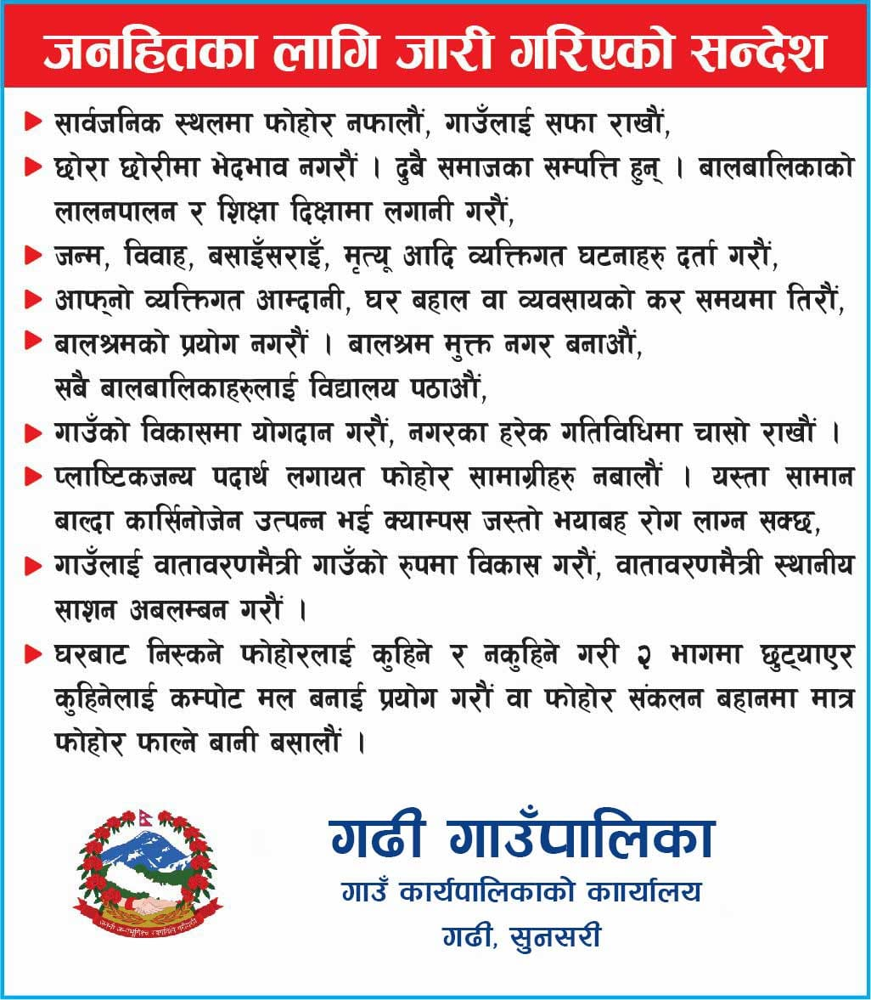
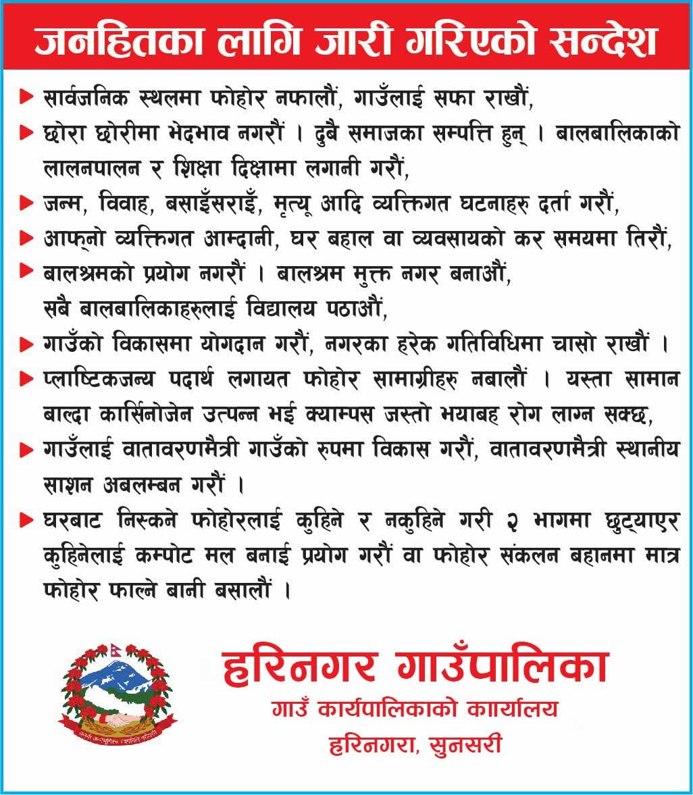
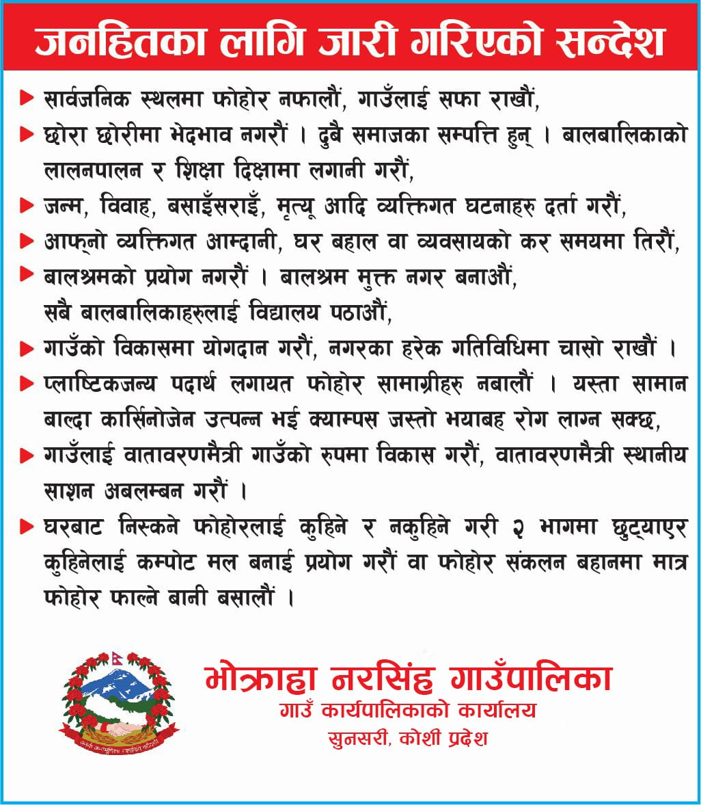
नेपाल टाइमलाइन न्यूज August 20, 2023
इनरुवामा विश्व मानवता दिवशको अवसरमा दुई जना महिला मानवअधिकारकर्मी सम्मानित
इनरूवा । सुनसरी सदरमुकाम इनरुवामा विश्व मानवता दिवशको अवसरमा दुई जना महिला मानवअधिकारकर्मी सम्मानित हुनुभएको छ । महिला पूनस्थापना केन्द्र ओरेकको आयोजनामा विश्व मानवता दिवश २०२३ को अवसर पारेर इनरुवाकी अधिकारकर्मी कानुन दाहाल अधिकारी र कोशीकी अधिकारकर्मी रामकुमारी यादवलाई सम्मान गरेको हो । दाहाल र यादवलाई कार्यक्रमका प्रमुख अथिति एवम् सुनसरीका प्रमुख जिल्ला अधिकारी हुमकला पाण्डे र गैरसरकारी संस्था महासंघका अध्यक्ष मेघराज न्यौपानेले संयुक्त रुपमा सम्मान गर्नुभयो । सम्मान कार्यक्रममा दिएको जानकारी अनुसार २०६५ भदौ २ गते कोशी बाढी प्रभावितहरुलाई उद्धार, राहत र संरक्षणमा विषेश योगदान गरेकाले रियल लाईफ हिरो सम्मान अर्थात महिला नेतृत्वको सवलिकरण मानविय संकटमा उदाहारण सम्मान बाट सम्मानित गरिएको जनाएको छ । यसैबीच विश्व मानवता दिवस आईतबार आरेकले महिला नेतृत्वको सवलिकरण मानविय संकटमा उदाहारण विपतको अवस्थामा लैगिंक हिसाँका सवाल सम्बोधनका लागि जिल्ला स्तरीय समन्वय बैठक सम्पन्न भएको छ ।
सम्पन्न भएको बैठकमा सकुन्तला भण्डारी, रमेश भट्टराई, रविन घिमिरे, पुष्प भट्टराई, बालकुमारी विक, जयकृष्ण यादव, तोया गिरी पोदार, सहजादी प्रविण, मजुद्धिन अंसारी, कविता मण्डल, प्रहरी निरीक्षक निरला भण्डारी, दिनेश साह सहितको उपस्थिती रहेको थियो । यो दिवश भने नेपालमा पनि विभिन्न कार्यक्रम गरी मनाइँदै छ । हरेक वर्षको अगष्ट १९ तारिखमा यो दिवस मनाउने गरिन्छ । यस वर्षको नारा ‘जे भए पनि सँगै’ अर्थात् जस्तोसुकै परिस्थितिमा पनि मानव अधिकारका लागि सबै समुदायसँग काँधमा काँध मिलाएर काम गर्ने भन्ने रहेको छ । संयुक्त राष्ट्रसङ्घअन्तर्गत नेपाल रहेका विभिन्न निकाय तथा अन्य गैरसरकारी सङ्घ–संस्थाले मानवीय सहयोगी क्षेत्रमा जस्तोसुकै परिस्थितिमा पनि काम गर्ने प्रण सहित दिवस मनाइएको छ । सन् २००३ को अगष्ट १९ मा इराकको बगदादस्थित संयुक्त राष्ट्रसङ्घमा भएको आक्रमणमा परी राष्ट्रसङ्घका २२ कर्मचारीको मृत्यु भएको थियो । सोही दिनको स्मरण गर्दै विश्वभर मानवता सहायताका लागि काम गर्दै आएकालाई प्ररेणा मिलोस् भन्ने उद्दश्यले राष्ट्रसङ्घले यो दिवस मनाउन सुरु गरेको हो । उक्त घटनाको २० वर्षपछि संयुक्त राष्ट्रसङ्घले विश्वभरका दुई सय ५० अर्बौं मानिसलाई सहयोग गर्ने लक्ष्यसहित काम गरिरहेको जनाएको छ । मानव अधिकारका लागि गर्ने प्रयाससँगै सङ्घले सामना गर्नुपर्ने चुनौती समेत बढेको छ । बढ्दो भूराजनीतिक तनाव, अन्तर्राष्ट्रिय मानव अधिकारसँग सम्बन्धित कानुनको बेवास्ता र जानाजानी हुने आक्रमणले मानव अधिकारको विषयमा चुनौती थपेको हो । मानव अधिकारको सम्मान, संरक्षण तथा संवद्ध्र्रन गर्नका लागि मानव अधिकार रक्षकको भूमिका महत्वपूर्ण हुने राष्ट्रिय मानव अधिकार आयोगले जनाएको छ । आयोगका अनुसार मानव अधिकार रक्षकको पहिचान, सुरक्षा, सञ्जालीकरण तथा उनीहरुको अधिकारको संरक्षण, सम्वद्र्धनलगायतका विषयमा राज्यबाट धेरै काम हुन सकेको छैन । आयोगको मानव अधिकार रक्षक सम्मेलन प्रतिवेदन, २०७९ अनुसार मानव अधिकार रक्षकले धम्की, आक्रमण, दबाब तथा मानसिक तनाव समेतको सामना गर्नुपरेको उल्लेख गरिएको छ । उक्त प्रतिवेदनले विभिन्न किसिमका समस्या, जोखिम तथा चुनौतीको सामना गर्नुपरेको विषयलाई सम्बोधन गर्न नीतिगत तथा संयन्त्रगत व्यवस्थाको आवश्यकतालाई औँल्याएको छ ।
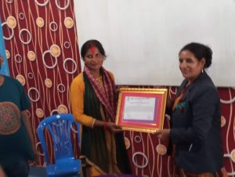
LOCAL NEWS
नेपाल टाइमलाइन न्यूज August 16, 2023
बराहक्षेत्रका नगर प्रमुख रमेश कार्कीद्वार प्रेस युनियन सुनसरीलाई सम्मान
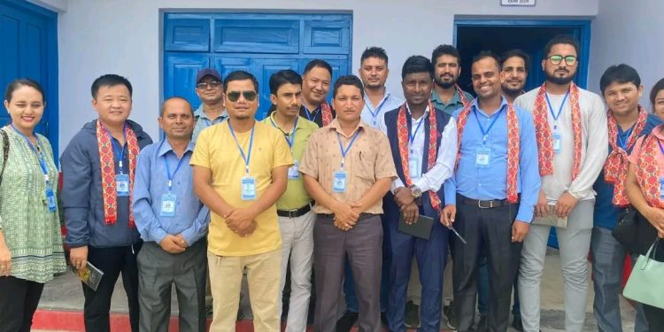
नसीम अन्सारी इनरुवा । नेपाल प्रेस युनियन जिल्ला कार्यसमिति सुनसरीको दोस्रो बैठक बराहक्षेत्रमा सम्पन्न भएको छ।
प्रेस युनियन जिल्लाको नियमित बैठक अन्तरगत पहिलो बैठक हरिनगर गाउँपालिकामा भएको थियो भने दोस्रो बैठक बुधबार बराहक्षेत्र नगरपालिकामा भएको हुँदा बराहक्षेत्रका नगर प्रमुख रमेश कार्कीद्वारा नेपाल प्रेस युनियन जिल्ला कार्यसमिति सुनसरीलाई सम्मान गरिएको हो।
बराहक्षेत्र नगरपालिका वडा नं-६स्थित नेपाल रेडक्रस सोसाईटीको सभा हल चक्रघट्टिमा ओजना गरिएको कार्यक्रममा नगर प्रमुख कार्कीले प्रेस युनियन सुनसरीका सभापति धुब्र ढकालसहित सम्पूर्ण कार्यसमितिलाई नोट बुक दिएर खाद्यमाला लगाएर सम्मानित गरिएका छन् ।
नगर प्रमुख कार्कीले कार्यक्रमलाई सम्बोधन गर्दै नेपाल प्रेस युनियन जिल्ला कार्यसमिति सुनसरीलाई बराहक्षेत्र नगरपालिकामा स्वागत सम्मान गर्दै सुनसरीमा प्रेस युनियनलाई अझै अगाडि बढाउन सुझाव दिएका छन् ।
नगर प्रमुख कार्कीले सुनसरीमा नेपाली काँग्रेसका उमेदवारहरुलाई जिताउन निकै भुमिका प्रेस युनियन सुनसरीका रहेका हामीले महसुस गरेका छौं। त्यसकारण अब जितेका जनप्रतिनिधिहरुसँगको सहकार्यमा प्रेस युनियन सुनसरीलाई चिनाउन जरुरी रहेको उहाँले बताउनु भयो।
सुनसरीमा नेपाली काँग्रेसका विभिन्न सघँ संगठनलाई चलयमान बनाउन जिम्मेवारीमा साथै बेलाबेलामा समाचार लेखिएर महत्त्वपूर्ण भुमिका निर्वाह गर्न प्रेस युनियन सुनसरीलाई आग्रह समेत गरेका छन्
नरसिंहमा भेट्याे शिवलिंग
भाेक्राहा नरसिंह गाउँपालिका वडा नम्बर ५ र ७ काे सीमानामा रहेको नरसिंहनाथ सामुदायिक वनमा शिवलिंग भेटिएको भन्दै श्रद्धालु भक्तजनहरूकाे भीड लाग्ने गरेका छन् , तस्बिर :-रविन्द्र कुमार यादव
नेपाल टाइमलाइन न्यूज July 31 2023, स्थानीय समाचार
रबिन्द्र यादव ,सुनसरी । भाेक्राहा नरसिंह गाउँपालिका वडा नम्बर ५ र ७ काे सीमानामा रहेको नरसिंहनाथ सामुदायिक वनमा शिवलिंग भेटिएको भन्दै श्रद्धालु भक्तजनहरूकाे भीड लाग्ने गरेका छन् ।
सामुदायिक वनमा गाई र भैंसी चराउने बेलामा एक जना भैंसी किसानले ढुंगा भन्दै लात्तीले हिर्काएपछि मान्छे अचेत भएको र अनुहार राताे भएको नरसिंहका स्थानीय गाउँवासीहरू बताउँछन् ।
स्थानीयहरूले बताएअनुसार ढुंगा भन्दै लात्तीले हिर्काएकाे व्यक्तिलाई केही घण्टा पछि अर्का भैंसी किसानले उक्त ढुंगालाई उठाएर सुरक्षित स्थानमा राखेका थिए ।
त्यसपछि अचेत अस्थामा रहेका व्यक्ति आफ्नो हाेसमा आएपछि उनले भने म ढुंगालाई लात्तीले त्यतिकै हाने त्यसपछि मलाई अचानक के भयाे मलाई थाहा भएनन् । तर मेरो गल्ती भयाे मलाई स्वीकार गर्नुपर्छ , म गल्ती स्वीकार गरेकाे बताए।
शुक्रबारदेखि आज साेमबारसम्म साे सामुदायिक वनमा शिवलिंग हेर्ने भक्तजनहरूकाे भीड लाग्ने गरेकाे स्थानीय हरिदेव ठाकुर(हरिहर) काे कथन छ ।
उनले बताएअनुसार शुक्रबारदेखि आज साेमबार सम्म झन्डै ७/८ हजारकाे हराहरीमा मान्छेले दर्शन गरेर फर्केको समाचार तयार गर्दा सम्म मान्छेहरूकाे आउनेजाने क्रम जारी रहेको अर्का स्थानीय उपेन्द्र मेहता बताउछन् ।
त्यस्तै जंगलमा भेटिएको शिवलिंगमा आजसम्म १५ हजार भन्दा बढी भेटी रकम चढाएको पुजारी प्रमेशवरी यादवले(भगवान) बताए ।
उता नरसिंहनाथ सामुदायिक वनमा भेटिएको शिवलिङ्गकाे नाम बाबा श्री पुरुषोत्तम नाथ महादेव नामकरण गरिएको छ ।
गाउँका धार्मिक गुरुहरूको सल्लाहमा पुरुषोत्तम महादेव नामकरण गरिएको हो । शिवलिङ्ग भेटिएसँगै वन क्षेत्रमा दर्शनार्थीहरूको भीड बढ्न थालेको स्थानीय मुकेश यादवले जानकारी दिए ।
POLITICAL NEWS
Thapa appointed Koshi CM twice within a month
By HIMALAYAN NEWS SERVICE
Published: 08:33 am Aug 02, 2023
KATHMANDU, AUGUST 1Nepali Congress Parliamentary Party leader of Koshi Province Uddhav Thapa has been appointed chief minister of Koshi Province for the second time in a span of 27 days. Nepali Congress Parliamentary Party leader Uddhav Thapa, whose post was quashed after the apex court verdict, has been appointed chief minister again six days after the order.The province head's office released a statement saying Thapa was appointed by province Chief Parshuram Khapung on the basis of signatures of 47 parliamentarians presented by the coalition. Thapa was the only contender for the chief minister's position.
He became chief minister for the second time through a new process after the Supreme Court on Thursday quashed his appointment as CM a month ago saying it was 'contrary to the Constitution of Nepal'.Baburam Gautam, who resigned as speaker of Koshi Province Assembly just before Thapa staked his claim today, has lost the status of speaker and become a member of the Province Assembly representing the CPN-Maoist Centre.In the 93-member Koshi Province Assembly, 29 of Nepali Congress, 14 of CPN-Maoist Centre, four of CPN (Unified Socialist) and one seat of Janata Samajwadi Party-Nepal have been added to reach the required 47 votes for majority.On the other hand, the largest party in the Koshi PA is CPN-UML with 40 MPs and Rastriya Prajatantra Party with 6 MPs. Both have a total of 46 votes.After the speaker's resignation, UML MP and Deputy Speaker Srijana Danuwar will preside over the Assembly as speaker. Now there is a provision that she cannot show any favouritism.With this, the total of 46 votes of UML-RPP has decreased by one and is now 45.As no single party has majority in the Koshi government, Thapa became the chief minister under the provisions of Article 168 (2) of the Constitution, which states that 'a member of the Province Assembly who can obtain majority with the support of two or more parties represented in the PA can be appointed chief minister'.Meanwhile, questions have been arising over the trust vote.Thapa who failed to secure the trust vote has another challenge ahead. However, he said a vote of confidence will be taken at an appropriate time "The coalition government is hugely thankful to Baburam Gautam.We will be able to run the government smoothly for four years now. And as for the floor test, we need not worry. We have majority again due to former speaker Baburam Gautam. Hence, we will go for the vote of confidence after discussing with coalition partners," CM Thapa told THT.When THT asked about Janata Samajwadi Party-Nepal's issue with the nomenclature of Koshi based on identity, he said, "We have thought of it and have made it a major agenda to be discussed in the coalition meeting before the trust vote. Similarly, we have also planned to give a proper place to Baburam Gautam for his contribution and sacrifice in the formation of the ruling coalition government in Koshi."Likewise, former speaker of Koshi Baburam Gautam said, "A province cannot exist without a government.In such a situation, a responsible person like me must fulfil his obligations to the country rather than hold the position.Therefore, with my own conscience I resigned from the speaker's post .
WORLD NEWS
India's northern Haryana state tense after 5 killed in communal clashes between Hindus and Muslims
By Associated Press
Published: 02:21 pm Aug 02, 2023
An elderly man walks in an area deserted after communal clashes in Nuh in Haryana state, India, Tuesday, Aug., 1, 2023. Photo: APAn elderly man walks in an area deserted after communal clashes in Nuh in Haryana state, India, Tuesday, Aug., 1, 2023. Photo: AP
NUH, AUGUST 2Indian authorities imposed a curfew, suspended internet service and deployed thousands of paramilitary forces Tuesday to parts of northern Haryana state after deadly communal clashes spread to Gurugram, a city just outside the capital, New Delhi.
The violence began Monday afternoon when Hindus and Muslims clashed with each other in Haryana's Nuh district during a religious procession by a Hindu nationalist group, the Press Trust of India news agency reported. Two police officers and two other people were killed.More than 20 police officers were injured in the violence and dozens of cars were set on fire, a police statement said.
Tensions later spilled over to Gurugram, some 30 kilometers (19 miles) from New Delhi, where mobs torched a mosque and killed a Muslim cleric late Monday night. Police said some attackers have been arrested.
There were no reports of fresh violence from either place on Tuesday, but authorities said they had ordered schools and colleges to remain shut as a precautionary measure.On Tuesday, baton-wielding police marched down the streets of Nuh littered which were with stones and charred vehicles in the areas where clashes took place, as fear-stricken residents remained indoors."A large mob destroyed property, cars and hand carts. I stayed indoors to protect my family," said local resident Mahendra, who only gave his first name.Another local, Akram Qureshi, said many families abandoned the violence-stricken neighborhoods out of fear.Haryana Chief Minister Manohar Lal Khattar, in a post on the social media platform X, formerly known as Twitter, condemned the violence in Nuh."The guilty will not be spared at any cost. Strictest action will be taken against them," he said.The state's home minister, Anil Vij, alleged the violence was "engineered" and said police will investigate the clashes.Communal violence in India is not new, with periodic clashes breaking out ever since the British partition of the Indian subcontinent in 1947, but observers say that religious polarization has risen under Prime Minister Narendra Modi's Hindu-nationalist government, further deepening fault lines against minorities and heightening tensions.
SPORT NEWS
Nepali women's team in the final of cricket
NEPALNEWS
2023 AUG 25, 16:42
The Nepali national women's team lost by 6 wickets in the match against Malaysia under the women's T-20 international series consisting of four countries. Despite the defeat, Nepal managed to enter the finals by being at the top in net run rate.
Today's match was reduced to 18 overs due to rain. Nepal had set a target of 84 runs against Malaysia. After losing the toss, Nepal batted first and scored 83 runs after losing 7 wickets in 18 overs.
The final will be between Nepal and Hong Kong tomorrow.
Paine Joins Adelaide Strikers as Assistant Coach
Nepal set Malaysia a target of 84 runs
ICC Cricket World Cup 2023: Ticket Sales Launch Date Announced
Nepal Battles Malaysia in Women's T20: Decisive Match for Final Spot.
BUSINESS NEWS
Qatar Airways posts a $1.2 billion profit over the last fiscal year when it hosted FIFA World Cup
By Associated Press
Published: 08:37 pm Jul 27, 2023
FILE - A Qatar Airways plane prepares to take off at San Francisco International Airport in San Francisco. Photo: APFILE - A Qatar Airways plane prepares to take off at San Francisco International Airport in San Francisco. Photo: AP
DUBAI, JULY 27Qatar Airways said Thursday it earned a profit of $1.2 billion over the last fiscal year, boosted in part by the small Arabian Peninsula country's hosting of the 2022 FIFA World Cup. Qatar Airways, like other carriers in Gulf Arab nations, relies on the country's location to ferry passengers between the East and West. Its earned revenue of $20.9 billion over the year is up from $14.4 billion the year before.
Those figures stand in contrast to the $4.1 billion loss it suffered in the 2021 fiscal year amid the coronavirus pandemic and the grounding of its fleet.
Qatar Airways' profit of $1.2 billion is down slightly from $1.5 billion last fiscal year. Part of that came from a spike in operating expenses, particularly in jet fuels as energy prices rose after the grip of the pandemic loosened and air travel resumed.
Qatar Airways received a $3 billion infusion from the government during the pandemic to keep it afloat."As the global travel industry continued its recovery from the COVID-19 pandemic, we consolidated our position as the airline of choice for millions of passengers across the globe," Qatar Airways CEO Akbar Al Baker said in a statement.The World Cup played a large role in Qatar Airways' success as well, with FIFA saying some 3.4 million spectators were on hand inside stadiums for the tournament. Many flying in used Qatar Airways' global network for their flights."Our country's long-held dream of organizing the FIFA World Cup finally became a reality and Qatar took center stage for hosting the world's most prestigious sporting event," Al Baker said. "After more than a decade of preparations and hard work, we brought fans from around the world."Meanwhile, Qatar Airways in February also resolved a long-running acrimonious legal dispute over the Airbus A350, which the airline had alleged had fuselages "degrading at an accelerated rate" in the long-range aircraft.European plane-maker Airbus then terminated a multibillion-dollar order by Qatar Airways for 50 of its smaller single-aisle in-demand A321neo jets.In the annual report, Al Baker praised the "amicable agreement" with Airbus and the delivery of airplanes from the manufacturer, which "will enable the airline to address the additional fleet capacity needed to maintain our growth plans."Qatar Airways flies a fleet of 265 aircraft to nearly 160 destinations worldwide.
TECHNOLOGICAL NEWS
India lands a spacecraft near the moon's south pole, a first for the world as it joins elite club
By Associated Press
Published: 08:17 pm Aug 23, 2023
Journalists film the live telecast of spacecraft Chandrayaan-3 landing on the moon at ISRO's Telemetry, Tracking and Command Network facility in Bengaluru.Journalists film the live telecast of spacecraft Chandrayaan-3 landing on the moon at ISRO's Telemetry, Tracking and Command Network facility in Bengaluru.
NEW DELHI, AUGUST 23India on Wednesday made history as it became the first country in the world to land a spacecraft near the moon's south pole, an uncharted territory that scientists believe could hold vital reserves of frozen water, and the fourth country to achieve a moon landing. A lander with a rover inside touched down on the lunar surface at 6:04 local time, sparking cheers and applause among the space scientists watching in the southern Indian city of Bengaluru. After a failed attempt in 2019, India now joins the United States, the Soviet Union and China in reaching this milestone.Indian Prime Minister Narendra Modi watched the historic landing from South Africa, where he is participating in the BRICS nations summit. "India is now on the moon. India has reached the south pole of the moon - no other country has achieved that. We are witnessing history," Modi said as he waved the Indian tri-colored flag.
S. Somnath, chairman of the state-run Indian Space Research Organization, or ISRO, said the rover will slide down a flap from the lander within hours or a day and conduct experiments, including an analysis of the mineral composition of the lunar surface.The mission is expected to remain functional for two weeks, he said. He also said India would next attempt a manned lunar mission.India's successful landing comes just days after Russia's Luna-25, which was aiming for the same lunar region, spun into an uncontrolled orbit and crashed. It would have been the first successful Russian lunar landing after a gap of 47 years. Russia's head of the state-controlled space corporation Roscosmos attributed the failure to the lack of expertise due to the long break in lunar research that followed the last Soviet mission to the moon in 1976.Excited and anxious, people across India, home to the world's largest population, crowded around televisions in offices, shops, restaurants and homes.
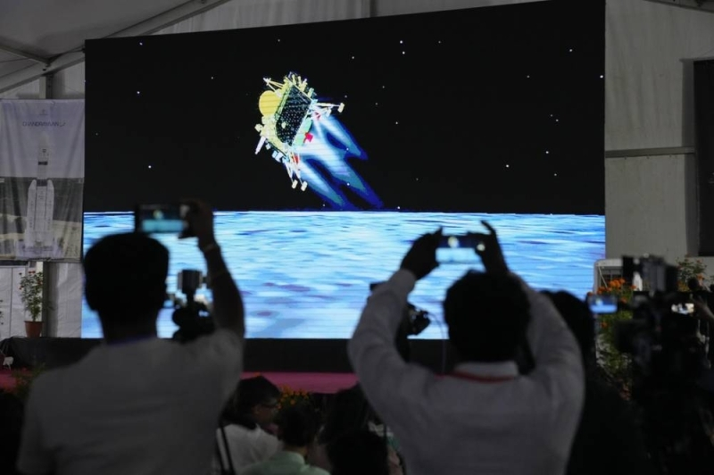
Thousands prayed Tuesday for the success of the mission with oil lamps on the river banks, temples and religious places, including the holy city of Varanasi in northern India.After the landing, congratulations poured in from around the world, cementing India's emergence as a modern space power."Your success will power the imagination and light the future of people around the world," the U.S. State Department's Bureau of Oceans and International Environmental and Scientific Affairs posted on X, formerly known as Twitter."Incredible!" European Space Agency's director general Josef Aschbacher tweeted. "I am thoroughly impressed."NASA's former science mission chief, Thomas Zurbuchen, who now works at ETH Zurich, a public research university in Switzerland where he is leading its space initiative, said he felt proud of the achievement.India's Chandrayaan-3 - "moon craft" in Sanskrit - took off from a launchpad in Sriharikota in southern India on July 14. Its landing marks a significant step forward for the nation's progress in space exploration, ISRO said in a statement earlier.Many countries and private companies are interested in the south pole region because permanently shadowed craters may hold frozen water that could help future astronaut missions.The six-wheeled lander and rover module of Chandrayaan-3 is configured with payloads that would provide data to the scientific community on the properties of lunar soil and rocks, including chemical and elemental compositions.India's previous attempt to land a robotic spacecraft near the moon's little-explored south pole ended in failure in 2019. It entered the lunar orbit but lost touch with its lander, which crashed while making its final descent to deploy a rover to search for signs of water. According to a failure analysis report submitted to the ISRO, the crash was caused by a software glitch.
The $140-million mission in 2019 was intended to study permanently shadowed moon craters that are thought to contain water deposits and were confirmed by India's Chandrayaan-1 orbiter mission in 2008.With nuclear-armed India emerging as the world's fifth-largest economy last year, Modi's nationalist government is eager to showcase India's rising standing as a technology and space powerhouse. A successful moon mission dovetails with Modi's image of an ascendant India asserting its place among the global elite and would help bolster his popularity ahead of a crucial general election next year.The anticipation for a successful landing rose after Russia's failed attempt and as India's regional rival China reaches for new milestones in space. In May, China launched a three-person crew for its orbiting space station and hopes to put astronauts on the moon before the end of the decade. Relations between India and China have plunged since deadly border clashes in 2020.Numerous countries and private companies are racing to successfully land a spacecraft on the lunar surface. In April, a Japanese company's spacecraft apparently crashed while attempting to land on the moon. An Israeli nonprofit tried to achieve a similar feat in 2019, but its spacecraft was destroyed on impact.Japan plans to launch a lunar lander to the moon over the weekend as part of an X-ray telescope mission, and two US companies also are vying to put landers on the moon by the end of the year, one of them at the south pole. In the coming years, NASA plans to land astronauts at the lunar south pole, taking advantage of the frozen water in craters.NASA Administrator Bill Nelson tweeted via X: "Congratulations @isro on your successful Chandrayaan-3 lunar South Pole landing! And congratulations to #India on being the 4th country to successfully soft-land a spacecraft on the Moon. We're glad to be your partner on this mission!"Pallava Bagla, a science writer and co-author of books on India's space exploration, said the Russian failure days earlier did put India off. He also said lessons learned from India's failed mission four years ago were incorporated and a flawless mission was executed on Wednesday."Indians didn't get derailed. They continued the journey with strength and confidence that paid off," he said.
ENTERTAINMENT NEWS
प्रेमीलाई भेट्न गाउँभरि लोडसेडिङ गरिदिने प्रेमिका
Nepal Timeline News July 27, 2023
माया प्रेम अन्धो हुन्छ भन्ने कथा त तपाईले सुनेकै होला तर यो कथासंग मिल्ले एउटा गठना बिहारको बेतिया गाउँमा भयो । सधैँ झलमल्ल भइरहने गाउँमा एक्कासि लगातार लोडसेडिङ हुन थाल्यो । बेलुका भयो कि गाउँमा बिजुली छैन । यो देखेर पुरा गाउँले चकित भए । यतिबेला चोरको बिगबिगी बढ्यो । सबैतिर हल्ला खल्ला भयो, आखिर बेलुका भयो कि किन बत्ती जान्छ ? केहीले विद्युत् प्राधिकरणलाई फोन गरे, प्राधिकरणबाट केही समस्या नभएको खबर आयो । केही युवा यसको जरामा पुग्न चाहे । लोडसेडिङ भएपछि के भएको रहेछ भनेर अनुसन्धान गर्न थाले ।
तर केही दिनको अनुसन्धानपछि युवकले सधैँ बत्ती जानुको चुरो कुरा पत्ता लगाए । खासमा गाउँकी एक युवतीले राती आफ्ना प्रेमीलाई भेट्नका लागि बिजुली बन्द गर्ने रहिछिन् । यसबारे पत्ता लगाएपछि ती युवकहरूले उनीहरूलाई रंगेहात समात्ने निर्णय गरे ।घटना बिहारको बेतिया गाउँको हो । प्रीति कुमारी नामकी एक युवतीले आफ्ना प्रेमीलाई भेट्नका लागि पुरा गाउँको बिजुली आपूर्ति बन्द गरिदिन्थिन् । छिमेकी गाउँका युवक राजकुमारसँग प्रीतिको माया बसेको थियो ।
आफ्नो सम्बन्धलाई गोप्य राख्न प्रीतिले यस्तो तरिका अपनाएकी थिइन् । प्रीतिले प्रत्येक दिन बिजुली आपूर्ति बन्द गरिदिन्थिन् जसका कारण गाउँमा चोरको बिगबिगी बढेको थियो । हामीलाई ती युवतीले साह्रै दुःख दिइन्,’ एक छिमेकीले इन्डिया टुडेलाई भने ।यी दुईको एउटा भिडियो सोसल मिडियामा सार्वजनिक भएको छ जसमा प्रीतिले आफ्ना प्रेमीलाई स्थानीयबाट जोगाइरहेको देख्न सकिन्छ । आक्रोशित स्थानीयले राजकुमारलाई कुट्ने धम्की दिइरहेका थिए । कोहीले राजकुमारलाई लट्ठीले एक दुई पटक हानेकोसमेत देख्न सकिन्छ ।
ती व्यक्ति त्यहाँबाट कसैगरी भागे र बदला लिन गाउँका केटाहरूलाई उठाएर ल्याए । अन्ततः घटनालाई साम्य पार्न दुई गाउँका स्थानीय बसेर यी जोडीको विवाह गर्ने मिति तोकियो । यी दुईले अब छिट्टै नै एक स्थानीय मन्दिरमा विवाह गर्दै छन् ।प्रीतिले आफ्नो सम्बन्धलाई गोप्य राख्ने तरिका सायद भारतकै एक इलेक्ट्रिसियनबाट सिकेकी हुन् । भारतमा एक इलेक्ट्रिसियनले आफ्नी प्रेमिकालाई गोप्य तरिकाले भेट्न पूरै गाउँको बिजुली आपूर्ति बन्द गरेका थिए ।
25 August 2023
At V.O.P. Media Group Pvt. Ltd. ("we," "us," or "V.O.P."), we are committed to protecting the privacy of our viewers, users, and partners. This Privacy Policy outlines how we collect, use, disclose, and safeguard personal information through our news channel services and associated platforms. By accessing our content and using our services, you consent to the practices described in this Privacy Policy.
Information We Collect
We may collect various types of information, including:
Personal Information:
This includes information that can be used to directly or indirectly identify you, such as your name, email address, postal address, and phone number.
Usage Information:
We collect data about how you interact with our content and platforms, including your browsing history, preferences, and engagement with our articles, videos, and other offerings.
Device Information:
We gather information about the devices you use to access our content, including device type, operating system, IP address, and browser type.
Location Information:
With your consent, we may collect your geolocation data to provide you with localized content and services.
How We Use Your Information
We use the collected information for various purposes, including:
Content Delivery:
To provide you with news, articles, videos, and other relevant content based on your preferences and browsing history.
Personalization:
To personalize your experience and recommend content that aligns with your interests.
Communication:
To communicate with you about our services, updates, promotions, and other news-related information.
Analytics:
To analyze usage patterns, improve our services, and enhance user experiences.
Legal Obligations:
To comply with legal obligations, enforce our terms of use, and protect our rights and the rights of others.
Sharing of Information
We may share your information with:
Affiliates and Partners:
We may share information with our affiliates and partners to improve our services and provide relevant content.
Service Providers:
We may engage third-party service providers to assist us in delivering our services, and they may have access to your information for this purpose.
Legal Requirements:
We may disclose information if required by law or to protect our rights, users, or the public.
Your Choices
You can:
You can opt out of receiving promotional communications from us by following the unsubscribe instructions provided in our communications.
Modify Personal Information:
You can update or correct your personal information by contacting us.
Device Controls:
You can adjust your device settings to control the information shared with us, such as geolocation data.
Security
We implement technical and organizational measures to safeguard your information against unauthorized access, alteration, disclosure, or destruction.
Changes to Privacy Policy
We may update this Privacy Policy periodically to reflect changes in our practices. We will notify you of significant changes through appropriate channels.
Contact Us
For any questions or concerns regarding this Privacy Policy or your data, please contact us at V.O.P.Media Group Pvt..
By continuing to use our services, you acknowledge that you have read and understood this Privacy Policy. Your continued use constitutes your acceptance of its terms and any updates.